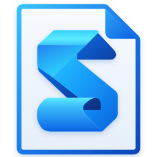
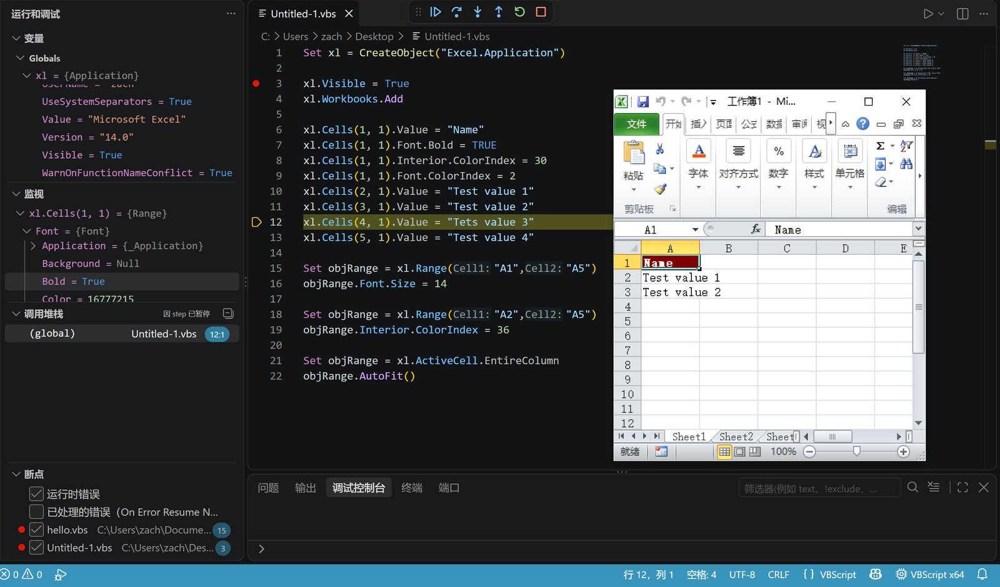
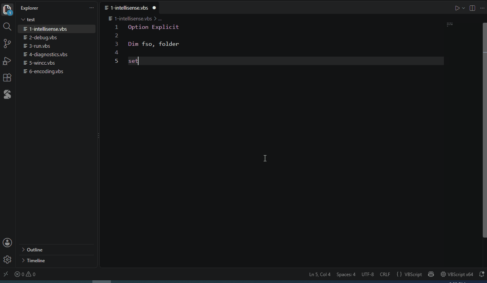
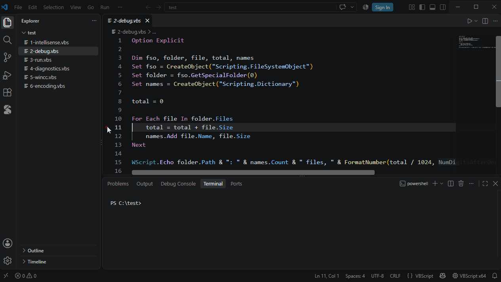
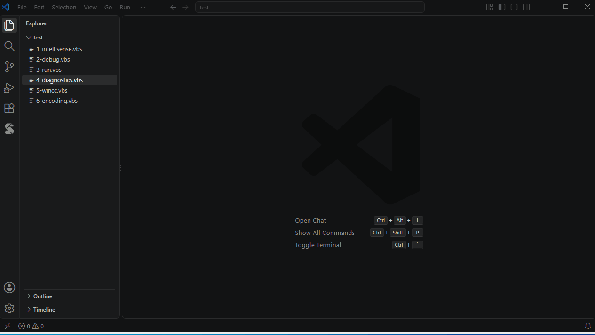
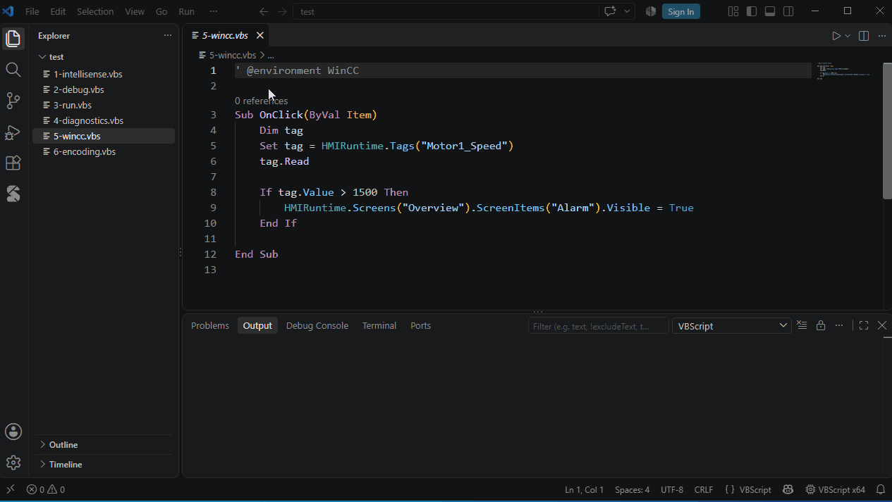
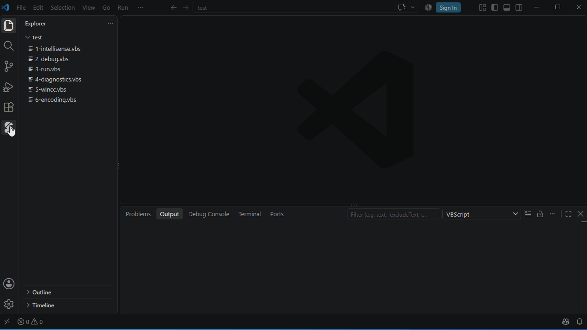
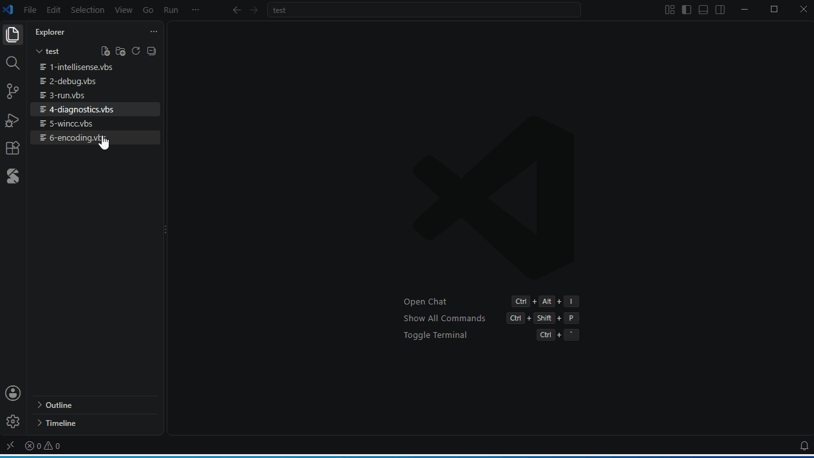

VS Code 插件 · 免费A free VS Code extension
VBScript，也能打断点。VBScript, with breakpoints.
给 VBScript 做的 VS Code 插件。认 COM 对象的补全，能下断点调试，脚本跑在一个兼容 cscript 的宿主里。维护老脚本、做自动化、写 WinCC 脚本的人用得上。 A VS Code extension for VBScript. It completes COM objects, lets you set breakpoints, and runs scripts in a cscript-compatible host. Handy if you maintain old scripts, do automation, or write WinCC scripts.
只支持 Windows，语法高亮在别的系统上也能用。Windows only. Syntax highlighting works anywhere.

功能Features
下面这些都是日常会用到的。The stuff you will actually use day to day.
直接读你电脑上注册的类型库。输入 CreateObject(" 会列出所有 ProgID，对象后面能补出方法和属性。
It reads the type libraries registered on your machine. CreateObject(" lists every ProgID, and objects complete their methods and properties.
For Each、With、默认成员、函数返回值，类型都能顺着推下去For Each, With, default members and return values' @type 注释告诉它' @type comment
按 F5 就能调，不用写 launch.json。Press F5. No launch.json to write.

语法错误交给系统自带的 vbscript.dll 去编译（只编译，不运行），所以报的错和真跑的时候一样。 Syntax errors come from the system's own vbscript.dll, which only compiles and never runs your script, so they match what a real run reports.

有些脚本跑在软件内部，本机没有注册类型库。WinCC 的我已经内置了，HMIRuntime.Tags("x").Read、事件过程里的 Item. 都能补全。别的软件可以自己写一个 *.vbstypes.json 来描述。
Some scripts run inside another application, with no type library on your machine. WinCC is built in, so HMIRuntime.Tags("x").Read and Item. in event procedures complete. For other applications, describe them in a *.vbstypes.json file.

示例脚本可以先预览再插入。常用的代码存成自己的片段，输个缩写就展开。 Preview sample scripts before inserting them. Save the code you reuse as snippets and expand them with a short trigger.

cscript 只认 ANSI 和 UTF-16。ANSI 的脚本会按系统代码页打开；带中文的 UTF-8 脚本，会提示你一键另存。自带的脚本宿主输入输出中文、日文、emoji 都没问题。 cscript only reads ANSI and UTF-16. ANSI scripts open with the system code page, and UTF-8 scripts with non-ASCII text get a one-click re-save. The bundled script host reads and writes any Unicode, emoji included.

原理How it works
三段小动画，各讲一件事。Three short animations, one idea each.
从 ProgID 找到注册表里的类型库，读出里面的成员，再顺着你的代码往下推：fso → Folder → Files → File。
From a ProgID to the registered type library and its members, then along your code: fso → Folder → Files → File.
语法检查直接调 vbscript.dll 的解析器，脚本引擎根本不会启动。 The syntax check calls vbscript.dll's own parser. The script engine is never started.
cscript 没有调试接口，所以我从头写了一个兼容的宿主：加载系统的 vbscript.dll，WScript 对象自己实现，和 cscript 逐项对照测过（Native AOT，x64 / x86 各一个）。调试时在每条语句前插一个钩子，行号不变，脚本里的 On Error 处理不受影响。 cscript has no debugging interface, so I wrote a compatible host: it loads the system's vbscript.dll, implements WScript from scratch and was tested against cscript (Native AOT, x64 and x86). Debugging puts a hook before every statement, so line numbers stay put and your On Error handling is left alone.
视频Video
六分钟，把功能和做法过一遍。Six minutes on the features and how it works (in Chinese).
安装Install
不用另外装 .NET。No .NET or anything else to install.
在 VS Code 里按 Ctrl+Shift+X。
Press Ctrl+Shift+X in VS Code.
或者在命令行里：
Or from a command line:
code --install-extension zach-shen.vbstools-vbscript
F5 调试，Ctrl+F5 直接运行。欢迎页里有上手引导。
F5 debugs, Ctrl+F5 just runs. The Welcome page has a walkthrough.
.vbs 被当成 Visual Basic 了？ VS Code 自带的 Visual Basic 支持也会认领 .vbs，在设置里加一行：
.vbs opens as "Visual Basic"? VS Code's built-in Visual Basic support also claims .vbs. Add this to your settings:
"files.associations": { "*.vbs": "vbscript" }
有问题或建议，去 GitHub Issues 说就行。
Problems or ideas? Open an issue on GitHub.